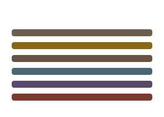
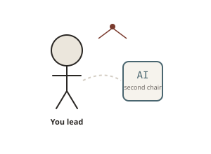
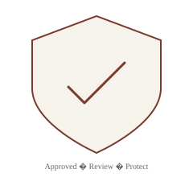
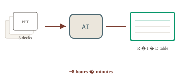
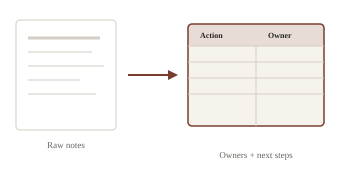
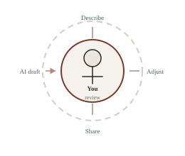

AI for Project Managers
A balanced approach — use AI for results, keep people at the center.
Melonie Poole · Chromatic Guide · PMI session, July 2026


The idea
You’re the lead. AI is the second chair.
AI can extend your capacity — but judgment, trust, and the room still belong to you. The winning strategy isn’t replacement; it’s thoughtful human–AI collaboration.
“AI will allow us to do more, to achieve more.” — Satya Nadella
What we’ll cover
- Shifting the mindset — working with AI
- Guardrails — protecting data and people
- Where AI fits in a PM’s week
- Real use cases, prompts, and time saved
- Three things to try this month
Part 1
Shifting the mindset
From time spent → to value delivered.
Four shifts worth making
Be more strategic
Move from tracking work to leading outcomes.
Experiment
Try tools. Keep what works. Drop what doesn’t.
Higher quality
Use AI to polish drafts — you still own the message.
Efficiency
Optimize everyday workflows so you can show up for people.
AI on your team — not in your seat
- Extends capacity — summarizes meeting notes so you don’t rewatch the recording
- Speeds execution — drafts a first version in minutes instead of hours
- Sharpens decisions — surfaces themes in survey or feedback data
- Supports your story — helps with visuals so you focus on what to say
You bring what AI cannot
Judgment on trade-offs
What matters most when everything is urgent.
Stakeholder empathy
Reading the room, building trust, navigating politics.
Coaching through ambiguity
Helping teams move when the path isn’t clear.

Part 2
Guardrails
Protecting our data and our people.

Using AI tools responsibly
- Use approved, secure tools — know what your organization allows
- Check whether AI is already in apps you use (Copilot, etc.) before adding new tools
- Avoid unverified “free” tools for sensitive or internal information
- Always review AI output before sharing — it makes mistakes
- Watch for bias, especially in hiring or high-stakes decisions
- Open-source or self-hosted AI needs IT/security setup — don’t go rogue
Uploading your work to AI
Good candidates: project plans, status reports, risk logs, meeting notes, templates, anonymized data (within policy).
- Check privacy and retention policies first
- Use approved platforms for anything internal
- Give context — role, audience, format you need
- Review every output before it leaves your hands
Part 3
AI woven into the work
Not a shiny add-on — a supporting line in the score.
Five places PMs feel it most
1. Planning
Charter drafts, scenarios, risk brainstorming
2. Delivery
Dependencies, checklists, workflow cleanup
3. Reporting
Status updates, data patterns, meeting summaries
4. Communication
Executive briefings, talking points, FAQs
5. Creativity
Visuals, icons, presentation polish
Spend reclaimed time on strategy, relationships, and decisions.

Tools in the mix
I use many; these show up most often for PM work:
- Microsoft Copilot — inside Teams, Outlook, Word, Excel, PowerPoint
- ChatGPT / Claude / Gemini — drafting, analysis, long documents
- PMI Infinity — standards-aligned PM support
- Gamma — fast narrative presentations
- Cursor — for non-coders who want to build docs, apps, and visualizations (Ask → Plan → Build)
Part 4
Use cases in action
Typical day: 10–15 AI assists · ~3–4 hours reclaimed · redeployed to high-value work.
Prompting for better prompts
When you’re stuck on how to ask — ask AI to help you ask.
Time saved: ~5 minutes per request · fewer back-and-forth iterations

Consolidating project data
Health check across multiple status decks → one Excel view.
Time saved: ~8 hours vs. slide-by-slide copy/paste
Risk prioritization & scoring
Time saved: ~6 hours · data-driven prioritization for stakeholders
Timeline from meeting history
Result: table → project tool → timeline in under 30 minutes · saved: ~8 hours of manual digging
Meeting notes → action items
Typical cleanup without AI: 30–45 minutes per meeting

Executive summary
Leadership needs concise updates — not raw notes.
Testing checklist from user stories
Time saved: ~4–6 hours of PM + QA manual drafting
Small wins add up
- Clean HTML from exported work-item descriptions in Excel
- Weekly status report from bullet notes → executive table
- Project health-check question framework in one pass
- User story title, description, and acceptance criteria drafts
- Icons and graphics for status comms — fast, fun, memorable
Part 5
Three things to try
Start this month
- Ask AI instead of only searching — one real question you’d normally Google
- One workflow: meeting notes → table with owners (record meetings if policy allows)
- Something creative — thank a teammate, celebrate a sprint, explain a complex topic with an image or short video

Always in the loop
- I describe what I need, review what AI produces, adjust, repeat — closer to editing than magic
- I own what I share — every output gets a human review
- I protect data and follow org policy — no exceptions for speed
- AI enhances how I already work; it doesn’t replace relationships or judgment
Questions?
More prompts, use cases, and resources at chromaticguide.com
Melonie Poole · Chromatic Guide